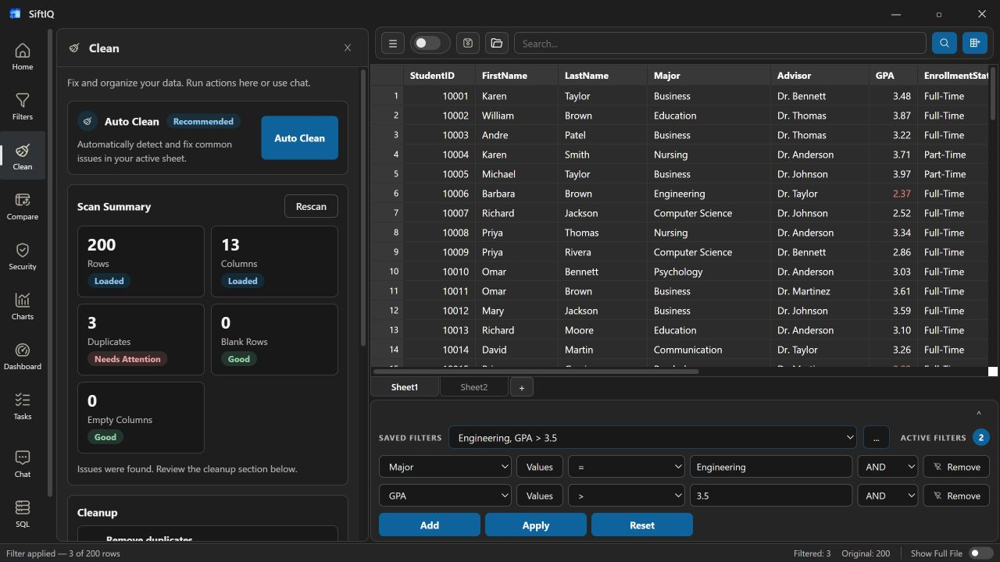

Open your data
Load Excel or CSV files and begin with an immediate view of rows, fields, and structure.
 SiftIQGet SiftIQ ↗
SiftIQGet SiftIQ ↗How it works
A direct workflow for analysts, operators, and teams whose important data still arrives in spreadsheets.
Load Excel or CSV files and begin with an immediate view of rows, fields, and structure.
Use chat, filters, SQL, cleaning tools, or the visual builder as the question evolves.
Create dashboards, export results, or preserve the workflow for the next file.
SiftIQ reduces the handoffs between preparation, investigation, visualization, and delivery. The result is a shorter path from a raw file to a defensible answer.
Assisted analysis
Use SiftIQ’s recommendations and AI-assisted tools to surface useful next steps while keeping the source visible.
